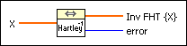

Inverse FHT VI
Owning Palette: Transforms VIs
Requires: Full Development System
Computes the inverse fast Hartley transform of the input sequence X.
The number of elements in the real input sequence X must be a valid power of two.

 Add to the block diagram Add to the block diagram |
 Find on the palette Find on the palette |